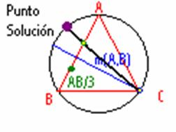

Problema 105.
En el desierto del Sahara y en tres puntos A, B, C, que forman los vértices de un triángulo equilátero de
Calendario Matemático (1999), 31 de Marzo. Selección por Germán Bernabeu Soria, del CEP de ELDA.
Solución de Víctor González Alonso alumno de Matemáticas de la Universitat Politécnica de Catalunya. (25 de enero de 2004)
Básicamente, el problema consiste en encontrar un punto P que cumpla PA/1 = PB/2 =PC/3 , es decir: PB=2PA, PC=3PA.
, es decir: PB=2PA, PC=3PA.
Aplicando un giro de centro B (por ejemplo) que transforme A en C (amplitud 60º), obtendríamos el punto P', transformado de P. Entonces se formaría un triángulo de lados PC, PP'=PB (el triángulo PP'B es equilátero por construcción) y P'C=PA. Ahora bien, si las distancias cumplen la condición del enunciado, no se forma un triángulo, sino que los punto P, P' y C están alineados (PC=PP'+P'C).
Por tanto, <BPP' = <BPC = 60º, y el punto P está en el arco capaz de 60º sobre BC, que no es otro que el arco BAC de la circunferencia circunscrita al triángulo (no podría ser el otro arco, ya que entonces P no se transformaría en un punto del segmento PC al realizar el giro). Busquemos ahora la forma de encontrar el punto P.
Por el teorema de la bisectriz interior, la bisectriz de <APB dividirá al segmento AB en dos partes proporcionales a 1 y 2: BT=2TA, con T en el interior del segmento AB. Por otra parte, sabemos que la bisectriz de un ángulo se corta con la mediatriz del lado opuesto en un punto de la circunferencia circunscrita; en este caso, dicha mediatriz es la de AB, que corta a la circunferencia en C. Por tanto, la bisectriz que hemos considerado es la recta CT, que cortará de nuevo a la circunferencia en el punto P buscado.

La construcción que se ve en la imagen se basa en lo que antes dije. Primero se demuestra que el punto está en la circunferencia circunscrita, y una vez que sabemos eso, sabemos que la bisectriz del ángulo APB se corta con la mediatriz de AB en la circunferencia, luego la bisectriz pasa por C. Por otro lado la razón entre los segmentos determinados por el pie de la bisectriz es el mismo que el del lado, por tanto, la bisectriz pasa además de por C por el punto P que resulta de dividir en tres partes iguales AB ya que la razón sería 1/3 a 2/3 es decir, ½ lo mismo que los lados.